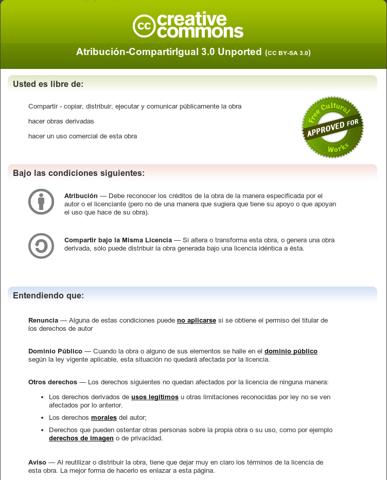

Cartografía y web, o por qué tus mapas están MAL
Pedro-Juan Ferrer
Jorge Sanz
http://kcy.me/w5b5
Agenda
Herramientas
Proyecciones
Diseño cartográfico
Los datos
Herramientas
Agenda (
revisited
)
Usas mal tus
herramientas
Menos mal que no vives en
Suecia
Tu mapa es
feo
(y no se
entiende
)
No
conoces
tus datos
Usa
bien
tus herramientas
Parte
Diapo
Parte
Diapo
Parte
Diapo
Parte
Diapo
Parte
Diapo
Conclusiones
...
...
...
...
TO-DO
: poner la portada cuando la tengamos
